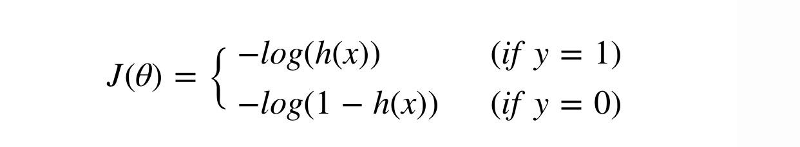
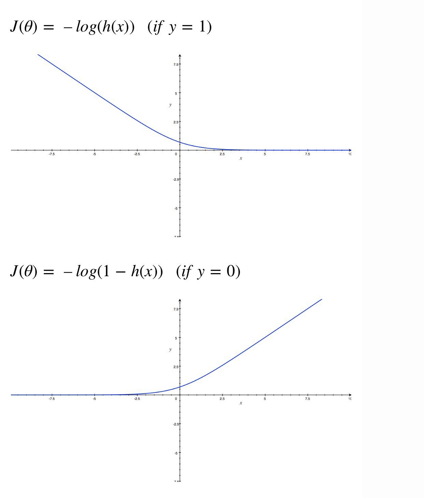

From Sigmoid function to Rectifier Linear function
In a neural network, in order to have deep nets and find complex relationships through arbitrary functions, we need non-linearities which also called Activation Functions.
The activation functions are responsible for transforming the summed weighted input from the node into the activation of the node or output for that input.
We have some common activation functions such as Sigmoid, Tanh, ReLU, Softmax, etc. In this blog, I want to introduce two functions called Sigmoid and Rectifier (ReLU - Rectifier Linear Unit). Let's see how these functions work and why they are often used.
Sigmoid (Logistic Function)
Firstly, let me recall you Sigmoid's formula:

Literally, Sigmoid's input is a real value and the range of its output is between 0 and 1.
Given cost function:

